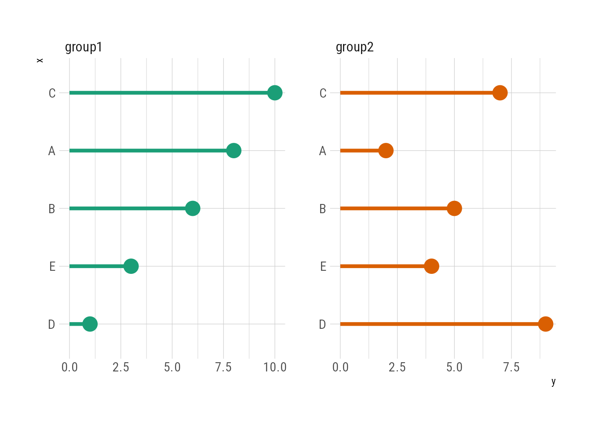
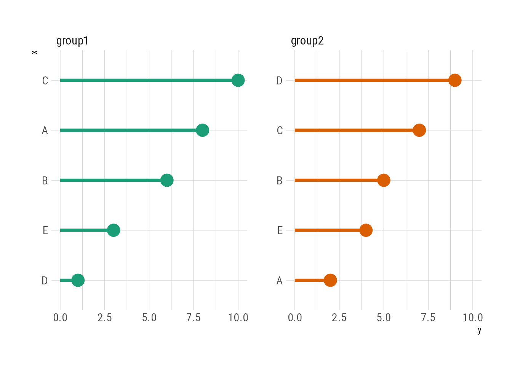

library(tidyverse)
library(tidytext)
theme_set(hrbrthemes::theme_ipsum_rc())
update_geom_defaults("pointrange", new = list(size = 1.2, linewidth = 1.5))一般在绘制条形图或克里夫兰点图时，会按照柱子或点的高低对变量进行排序，以使图形更加整洁美观。
例如：
pop_data <- population %>%
filter(year == 1995) %>%
slice_head(n = 10)
pop_data %>%
ggplot(aes(country, population)) +
geom_pointrange(aes(ymin = 0, ymax = population)) +
scale_y_continuous(labels = scales::label_comma()) +
coord_flip()
pop_data %>%
mutate(country = fct_reorder(country, population)) %>%
ggplot(aes(country, population)) +
geom_pointrange(aes(ymin = 0, ymax = population)) +
scale_y_continuous(labels = scales::label_comma()) +
coord_flip()上面的排序是借助fct_reorder()函数实现的。然而,在处理文本数据并绘制分面图时,我发现这种方法会出现问题。
exm_data <- tibble(
x = rep(LETTERS[1:5], 2),
y = sample(1:10),
z = c(rep("group1", 5), rep("group2", 5))
)
exm_data# A tibble: 10 × 3
x y z
<chr> <int> <chr>
1 A 8 group1
2 B 6 group1
3 C 10 group1
4 D 1 group1
5 E 3 group1
6 A 2 group2
7 B 5 group2
8 C 7 group2
9 D 9 group2
10 E 4 group2exm_data %>%
group_by(z) %>%
mutate(x = fct_reorder(x, y)) %>%
ggplot(aes(x, y, color = z)) +
geom_pointrange(aes(ymin = 0, ymax = y), show.legend = FALSE) +
facet_wrap(~ z, nrow = 1, scales = "free") +
coord_flip() +
scale_color_brewer(palette = "Dark2")
可以看出，group1组别中的排序是正确的，group2组中的排序却是混乱的。虽然在fct_reorder()前使用了group_by()，但是变量x并没有真正在两个组内分别排序。这是因为group1和group2的数据同处于同一个数据框内，作为因子变量的x不能同时有两种排序方式。
举个例子，我们按照不同的排序生成两组因子变量，然后将它们合并为一列
dt_a <- tibble(fct_var = factor(c("A", "B", "C", "D"), levels = c("A", "B", "C", "D")),
id = "a")
dt_b <- tibble(fct_var = factor(c("A", "B", "C", "D"), levels = c("D", "C", "B", "A")),
id = "b")
dt_bind <- bind_rows(dt_a, dt_b)
dt_bind# A tibble: 8 × 2
fct_var id
<fct> <chr>
1 A a
2 B a
3 C a
4 D a
5 A b
6 B b
7 C b
8 D b 但此时因子变量fct_var只有一种排序方式。
levels(dt_bind$fct_var)[1] "A" "B" "C" "D"因此，在绘制分面图形时，不能用fct_reorder()来调整因子变量的排序。
幸运的是，tidytext包的reorder_within()和scale_*_reordered()可以解决这个问题。
exm_data %>%
mutate(x = reorder_within(x, by = y, within = z)) %>%
ggplot(aes(x, y, color = z)) +
geom_pointrange(aes(ymin = 0, ymax = y), show.legend = FALSE) +
facet_wrap(~ z, scales = "free_y") +
scale_x_reordered() +
coord_flip() +
scale_color_brewer(palette = "Dark2")
这个方法的本质是先将因子变量和用于分面的变量合并成一个新的因子变量，再对这个新的因子变量进行排序。
exm_data %>%
mutate(x = reorder_within(x, by = y, within = z))# A tibble: 10 × 3
x y z
<fct> <int> <chr>
1 A___group1 8 group1
2 B___group1 6 group1
3 C___group1 10 group1
4 D___group1 1 group1
5 E___group1 3 group1
6 A___group2 2 group2
7 B___group2 5 group2
8 C___group2 7 group2
9 D___group2 9 group2
10 E___group2 4 group2相当于
exm_data %>%
mutate(x = str_c(x, z, sep = "__"),
x = fct_reorder(x, y))# A tibble: 10 × 3
x y z
<fct> <int> <chr>
1 A__group1 8 group1
2 B__group1 6 group1
3 C__group1 10 group1
4 D__group1 1 group1
5 E__group1 3 group1
6 A__group2 2 group2
7 B__group2 5 group2
8 C__group2 7 group2
9 D__group2 9 group2
10 E__group2 4 group2总之,在绘制包含分面的图形时,如果需要对不同分面内的因子变量进行排序,可以使用tidytext包提供的reorder_within()和scale_*_reordered()函数,它们可以帮助我们轻松实现分组内的因子变量排序。